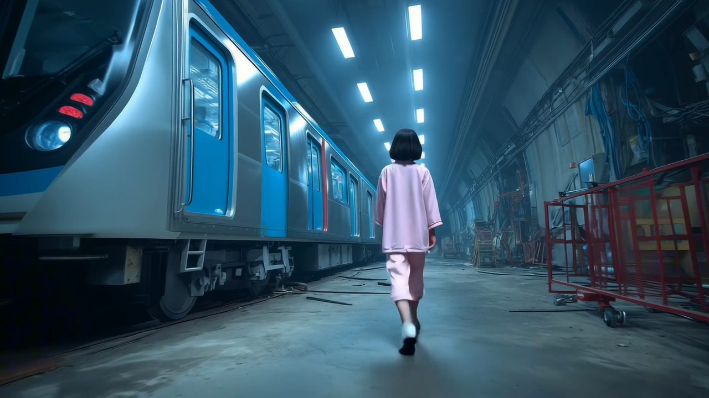
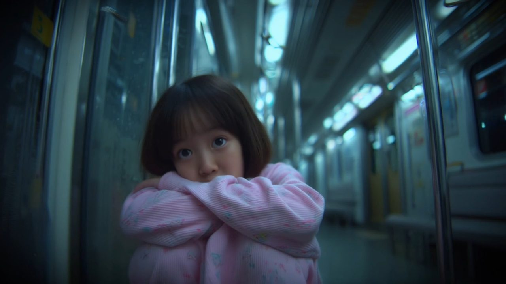
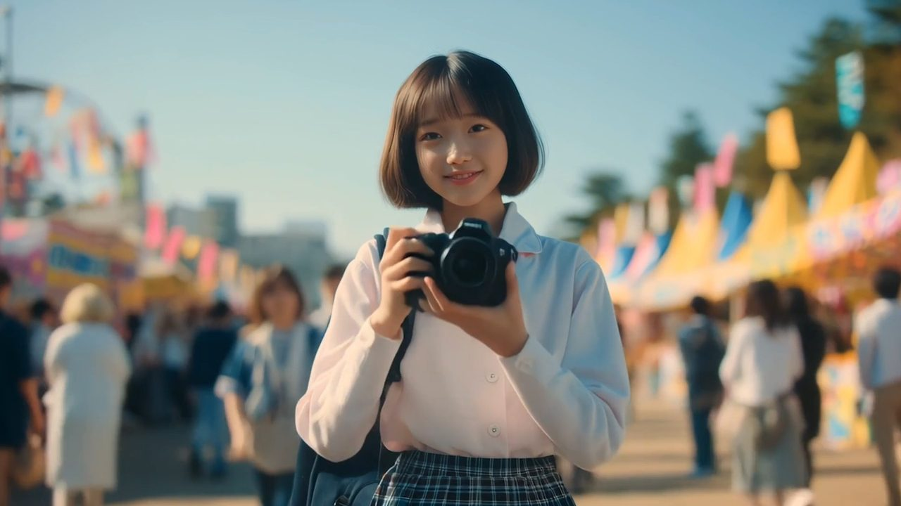

AI 단편 · 2025
가능성
「가능성」 경기북부발전 홍보영상

줄거리
중학교 입학을 앞둔 예나는 부모님이 이 동네를 떠날지 말지로 다투는 소리를 듣고 조용히 집을 나섭니다. 공사 중인 역에 멈춰 선 전동차에 오르자 안내 방송이 나옵니다. "다음 역은… 2028년 경기북부입니다."
문이 열리자 허허벌판 창고 부지는 청년 창업 단지로, 폐허 같던 역사는 GTX 환승 터미널로 바뀌어 있습니다. 시험 운행이 끝나 현실로 돌아온 예나는 부모님께 이사 가지 말자고 말합니다. 3년 뒤 가족은 바뀐 동네에서 웃고, 마지막 장면에서 예나가 그날 시장에게 쓴 편지가 읽힙니다. "이 아이가 본 건 미래가 아니라… 가능성이군요."


